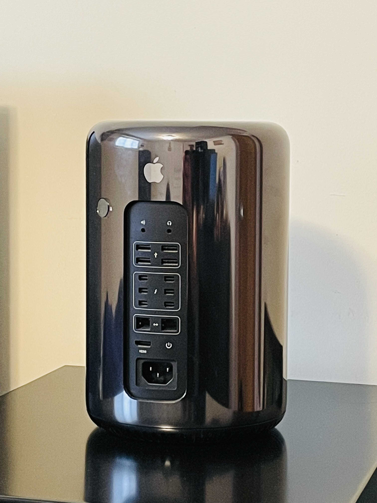

Installing FreeBSD on a 2013 Mac Pro

Figure 1: My 2013 Mac Pro
In 2021 I decided to go all-in 1 on a 2013 (trashcan) Mac Pro I saw listed on Craigslist.
However, I soon discovered that this machine suffered from severe thermal issues and quickly became one of the many unhappy users experiencing spontaneous freezing and crashes thought to be caused by Apple’s proprietary dual AMD FirePro GPUs.
If I was in the market for a new Mac, the right thing to do would have been to get an M1 Mac mini. Not only are the M1 Macs faster, they are also cheaper and consume significantly less energy. 2 However, I wasn’t really in the market for a Mac, what I wanted was a server.
As it turns out, the 2013 Mac Pro is a very compelling server. It is extremely quiet, compact, and rocks a 12-core Intel Xeon E5 with 64GB of ECC memory. Unfortunately, I wasn’t expecting the thermal issues and kernel panics, which made me skeptical of this machine’s viability as a reliable home server, so mostly it sat on a shelf.
Eventually, I decided to see if I could install Linux or maybe even FreeBSD alongside macOS. My hope was that by running on a minimal “headless” environment, I could avoid any stability issues due to the GPUs. Furthermore, I’ve been interested in trying out FreeBSD for a while because of two very compelling features: ZFS and the base system 3.
While ZFS has been available on Linux for several years now, it has always been somewhat of an outcast, with Btrfs being the “modern” flagship filesystem. Meanwhile, FreeBSD has proudly supported ZFS as a first-class filesystem since 2008.
Besides ZFS, I really like the unified deployment model of the FreeBSD base system. This provides a level of consistency and correctness in the operating system that I think the Linux deeply struggles with.
FreeBSD Installation Notes
This was going to be my first time installing FreeBSD, so luckily I had my T470 lying around to experiment with. I wasn’t expecting the installation on the Mac Pro to go smoothly, so having a computer that was known to be compatible with FreeBSD was really convenient. I was able to run though several installations to get a sense of how things would go on the Mac.
The very first thing I did was disable disk encryption (FireVault) on the Mac Pro. I’m not sure it would have been a problem, but I didn’t have any issues turning FireVault back on after completing the FreeBSD installation process.
One of the biggest drawbacks to FreeBSD is that there is much less content online to help troubleshoot issues or answer all the random questions you might have. Fortunately, between the FreeBSD, Hackintosh, and Linux communities, I was able to cobble together enough information to get a successful multi-booting environment setup on the Mac Pro.
After testing my bootable FreeBSD USB drive on my ThinkPad, I tried to boot into it from the Mac by holding down the Option (Alt) key during startup.
{kind=link}
Figure 2: Holding Option (Alt) to boot with my FreeBSD USB drive
{kind=link}
Figure 3: Nice! This might actually work
I was pretty excited after seeing the FreeBSD boot menu show up. I wasn’t sure what to expect because the Xeon E5 doesn’t have integrated graphics and I wasn’t sure the AMD FirePro’s were going to work. Although my enthusiasm didn’t last long, only a few seconds into the boot process and it was game over: The console was endlessly streaming the text pcib8: Power Fault Detected and became completely unresponsive.
{kind=link}
Figure 4: Oh NO! pcib8: Power Fault Detected. I’m stuck.
Somehow, I was able to dig up an old forum post by someone with this exact issue but unfortunately it went unresolved. However, it gave me hope a solution was out there.
I spent about half an hour playing around in the boot menu trying to figure out if I could get something to work. Single User Mode had the same problem and I wasn’t really sure how to use the Loader prompt. However, I felt like I was making progress.
My biggest clue was the pcib8 bit. Since this was an error message
during PCI device initialization, I started searching the web for things
like “FreeBSD pci won’t boot” and “FreeBSD power fault detected”.
Once it became clear that I was on my own with this one, I pulled up the FreeBSD manual pages for boot(8), loader(8), and pci(4) and started reading through them. I began to get a sense for how the FreeBSD boot process worked and was ready to try setting custom boot options.
Amazingly, I discovered a single boot option that fixed the issue. Now I could finally get into the FreeBSD installer and live environment!
Here is all I needed to get FreeBSD to boot on the Mac Pro:
- Press
3to “Escape to loader prompt” - Enter:
set hw.pci.enable_pcie_hp="0"to disable PCI-express HotPlug - Enter:
bootto boot
{kind=link}
Figure 5: Sucessful boot after setting hw.pci.enable_pcie_hp="0"
Resizing macOS
When installing FreeBSD on an machine already using EFI, you only need
two partitions: freebsd-root and freebsd-swap. The FreeBSD
installer calculates size using powers of two (eg: Gibibytes) while
macOS uses powers of 10 (eg: Gigabyte). I decided on a 4GiB swap and
80GiB root partition for FreeBSD.
(84 GiB / 1 GiB) * (2^30 bytes / 1 GB) = 90,194,313,216 bytes(90,194,313,216 bytes / 1 byte) * (1 GB / 10^9 bytes) = 90.194313216
This means I will need to resize the macOS partition to 90.19 GB.
One of the great features of the “new” Apple File System (APFS) is that you can resize the startup disk while it’s mounted. There’s no need to reboot into recovery or another live environment.
Now, it doesn’t matter which filesystem you choose in Disk Utility because the FreeBSD installer will create the real partition. The important part is being able to know which of the resized partition is which so you don’t accidentally overwrite macOS.
{kind=link}
Figure 6: Choose macOS partition to resize
{kind=link}
Figure 7: Set the new size for your disk
{kind=link}
Figure 8: Don’t be afraid
{kind=link}
Figure 9: Eventually the resize will finish
Installing FreeBSD
The first step is to create the freebsd-root and freebsd-swap
partitions. Don’t forget to add drive labels and enable TRIM support
if you’re using an SSD.
By default, the FreeBSD installer sets generic drive names in
/etc/fstab. If you don’t use labels, FreeBSD will get confused and
refuse to boot whenever you add or remove drives.
If you forget to set labels on your drive partitions during the
installation, you will need to add them and update the entries in
/etc/fstab using the gpart utility.
{kind=link}
Figure 10: Choose “Manual Disk Setup”
{kind=link}
Figure 11: Initial partition table after resizing from macOS
{kind=link}
Figure 12: Creating freebsd-root partition
{kind=link}
Figure 13: Enabling TRIM on SSD
{kind=link}
Figure 14: Creating freebsd-swap partition
{kind=link}
Figure 15: Final partition table
{kind=link}
Figure 16: FreeBSD installation progress
After creating these custom partitions, the only thing left to do is
remember to add hw.pci.enable_pcie_hp="0" to /boot/loader.conf
before rebooting. I also ended up adding autoboot_delay="5".
{kind=link}
Figure 17: Don’t forget to edit /boot/loader.conf before rebooting
{kind=link}
Figure 18: Editing /boot/loader.conf
Post-Installation
It’s possible the Mac will default to booting FreeBSD, but you can always hold down the Option (Alt) key during boot to select a different OS.
Use Drive Labels
The first thing you should do is open /etc/fstab and switch out the
drive numbers for your disk labels (Don’t forget to make a backup
first!). You can also comment-out the mount for /boot/efi since the
machine is going to use Apple’s EFI partition instead.
$ cat /etc/fstab# Device Mountpoint FStype Options Dump Pass#/dev/gpt/rootfs / ufs rw 1 1/dev/gpt/swapfs none swap sw 0 0#/dev/ada0p1 /boot/efi msdosfs rw 2 2
Disable Hyperthreading
- Check for hyperthreading options:
sysctl machdep | grep hyper echo 'machdep.hyperthreading_allowed="0"' >> /boot/loader.conf- sysctl(8)
- https://lists.freebsd.org/pipermail/freebsd-smp/2010-May/001685.html
Dvorak and Switching Caps-Lock to Control
kbdmapChoose desired keymap (eg: us.dvorak)kbdcontrol -d | sed 's/clock/lctrl/g' > ctrlcaps.keymapDump current keymapkbdcontrol -l ctrlcaps-dvorak.keymapLoad custom keymap
Networking
- Check interfaces and enable DHCP on ipv4 and ipv6:
ifconfig -a - Add the following to
/etc/rc.conf:ifconfig_bge1_"DHCP"ifconfig_bge1_ipv6="inet6 accept_rtadv"
- Restart network service:
/etc/rc.d/netif restart
SSH
The default /etc/ssh/sshd_config, looked good to me (i.e., no password or root logins).
Fuse and exFAT support
It would be nice to be able to mount USB drives…
pkg install fusefs-exfatkldload fusefsmount.exfat /dev/da0s1 /media/usb- Add
fusefstokld_list=""entry in/etc/rc.conf
Checking Disk Performance
camcontrol devlistdiskinfo -tv /dev/adN
CPU and Sensor Data
echo 'coretemp_load="YES"' >> /boot/loader.confkldload coretemp- Check temperature with:
sysctl dev.cpu | grep temperature
Getting the rest of the Mac Pro’s sensor data required patching the Apple SMC driver in FreeBSD.
Update: Now that my patch has been accepted into
FreeBSD, all you will need to do is add asmc_load="YES" to
boot/loader.conf.
diff -u original/asmc.c my-patch/asmc.c--- original/asmc.c 2021-12-28 23:43:20.905442244 -0600+++ my-patch/asmc.c 2021-12-29 00:10:38.424770226 -0600@@ -328,6 +328,15 @@ASMC_MP5_TEMPS, ASMC_MP5_TEMPNAMES, ASMC_MP5_TEMPDESCS},+ /* Idem for the Mac Pro 2013 (cylinder) */+ {+ "MacPro6,1", "Apple SMC Mac Pro (2013)",+ ASMC_SMS_FUNCS_DISABLED,+ ASMC_FAN_FUNCS2,+ ASMC_LIGHT_FUNCS_DISABLED,+ ASMC_MP6_TEMPS, ASMC_MP6_TEMPNAMES, ASMC_MP6_TEMPDESCS+ },+{"MacBookAir1,1", "Apple SMC MacBook Air",ASMC_SMS_FUNCS, ASMC_FAN_FUNCS, NULL, NULL, NULL,
diff -u original/asmcvar.h my-patch/asmcvar.h--- original/asmcvar.h 2021-12-28 23:43:12.163365462 -0600+++ my-patch/asmcvar.h 2021-12-29 00:11:36.207227372 -0600@@ -581,6 +581,18 @@"Te3F", "Te3S", "Te4F", "Te4S", "Te5F", \"Te5S", "TeGG", "TeGP", "TeRG", "TeRP", \"TeRV", "Tp0C", "Tp1C", "TpPS", "TpTG", }++#define ASMC_MP6_TEMPS { "TA0P", "TA1P", "TC0P", "TG0D", "TG0P", \+ "TG1D", "TG1P", "TM0P", "TM1P", NULL }++#define ASMC_MP6_TEMPNAMES { "ambient_air_1", "ambient_air_2", \+ "cpu_proximity", "gpu_diode_1", "gpu_proximity_1", "gpu_diode_2", \+ "gpu_proximity_2", "mem_proximity_1", "mem_proximity_2" }++#define ASMC_MP6_TEMPDESCS { "Ambient Air 1", "Ambient Air 2", \+ "CPU Proximity", "GPU Diode 1", "GPU Proximity 1", "GPU Diode 2", \+ "GPU Proximity 2", "Memory Bank A", "Memory Bank B" }+#define ASMC_MBA_TEMPS { "TB0T", NULL }#define ASMC_MBA_TEMPNAMES { "enclosure" }#define ASMC_MBA_TEMPDESCS { "Enclosure Bottom" }
Rebuilding the asmc driver with my patch:
cd /usr/src/sys/modules/asmcmakemake installkldunload asmckldload /boot/modules/asmc.ko# Check /var/log/messages for missing key entries# Must add kld_list="/boot/modules/asmc.ko" to /etc/rc.conf instead of asmc_load="YES"# in /boot/loader.conf so that we find our compiled version of the module
Checking sensor data:
$ sysctl dev.asmcdev.asmc.0.temp.mem_proximity_1: 42dev.asmc.0.temp.mem_proximity_2: 41dev.asmc.0.temp.gpu_proximity_1: 45dev.asmc.0.temp.gpu_diode_1: 47dev.asmc.0.temp.gpu_proximity_2: 44dev.asmc.0.temp.gpu_diode_2: 47dev.asmc.0.temp.cpu_proximity: 42dev.asmc.0.temp.ambient_air_1: 37dev.asmc.0.temp.ambient_air_2: 29dev.asmc.0.fan.0.targetspeed: 790dev.asmc.0.fan.0.maxspeed: 1900dev.asmc.0.fan.0.minspeed: 790dev.asmc.0.fan.0.safespeed: -1dev.asmc.0.fan.0.speed: 789dev.asmc.0.fan.0.id: Maindev.asmc.0.%parent: acpi0dev.asmc.0.%pnpinfo: _HID=APP0001 _UID=0 _CID=SMC-HURONRIVERdev.asmc.0.%location: handle=\_SB_.PCI0.LPCB.SMC_dev.asmc.0.%driver: asmcdev.asmc.0.%desc: Apple SMC MacPro (2013)dev.asmc.%parent:
Changing fan speed:
- View current:
sysctl dev.asmc.0.fan.0.speed - Set new:
sysctl.dev.asmc.0.fan.0.minspeed=1800
Submitting my patch:
Resources:
Installing the rEFInd Boot Manager
Rather than holding down the Option (Alt) key every time you want to boot into a different OS, you can get a graphical boot menu by installing rEFInd.
Here’s how to install it:
- Download rEFInd and copy it onto a USB drive.
- Reboot your Mac into recovery by holding down Command (Win) + R.
- Open Terminal.app.
- Temporarily disable System Integrity Protection (SIP):
csrutil disable. - Reboot and enter recovery again.
- Open Terminal.app and plug in your USB drive.
- Navigate to the
refinddirectory on your USB drive (Look in/Volumes/). - Run the installer:
./refind-install - Enable SIP:
csrutil enable. - Reboot
{kind=link}
Figure 19: Installing rEFInd
{kind=link}
Figure 20: The rEFInd boot menu
Customizing rEFInd
- rEFInd will default to the most recently booted OS, so the only configuration I’m doing is setting the timeout to 5s instead of 20.
mkdir /Volumes/ESPdiskutil list(find label for EFI Boot eg: disk0s1)mount -t msdos /dev/disk0s1 /Volumes/ESPcd /Volumes/ESP/EFI/refind/- http://www.rodsbooks.com/refind/configfile.html
Footnotes:
I decided to upgrade the CPU and RAM to the maximum configuration originally offered by Apple. Back in 2013 this machine would have cost over $8,000. Swapping out the CPU was a bit more involved than a typical PC but the iFixit guide was really comprehensive and the whole process took about two hours.
| Power Consumption | Idle | Max |
|---|---|---|
| 2020 Mac mini | 6.8 W | 39 W |
| 2013 Mac Pro | 44 W | 270 W |
Honorable mention for no GPL. Please note that systemd is not mentioned. Linux is clearly much better off with systemd and the complaining needs to stop.